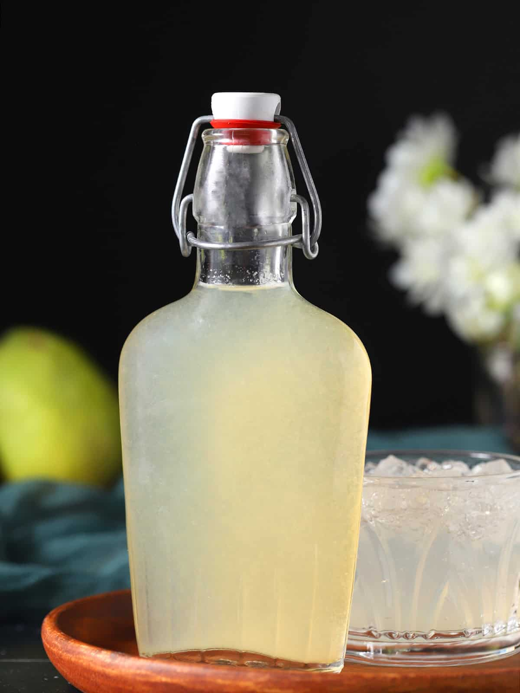

Home
Spiced Pear Simple Syrup

Description
I actually came across this idea at the Gordon Ramsay Pub and Grill in Atlantic City. I ordered a spiced pear old fashioned
and enjoyed it so much that I wanted to recreate it at home. So, after some research on simple syrups, I was able to make
this! Add a little to your favorite old fashioned recipe and you will have yourself a delicious drink with a sweet fruit
flavor that compliments the bourbon beautifully.
Ingredients
- 1 1/2 cups Water
- 1 1/2 cups Commice or Anjou Pears, Any kind will work
- 3/4 cup Granulated Sugar
- 3 Cinnamon Sticks
Directions
- Add the water, pears, sugar, and cinnamon sticks to a large sauce pan over medium heat. Stir gently until the sugar has
completely dissolved.
- Gently simmer for about 30 minutes.
- Remove the pan from the heat and allow to cool for 15 minutes.
- Strain the syrup into a glass measuring cup and discard the pears and cinnamon sticks. I like to save the pears as a
topping for ice cream.
- Strain the syrup a second time into a glass bottle or container that can be tightly sealed for storage.
- Refrigerate for up to two weeks.